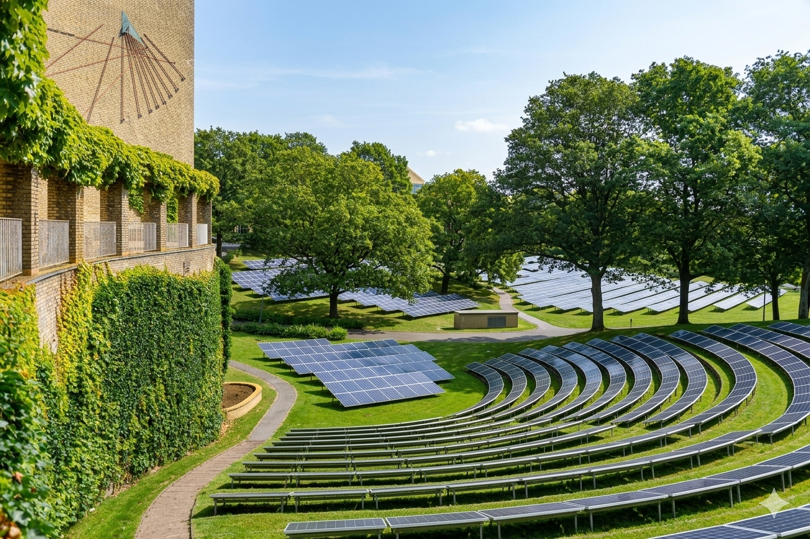

Planen udlægger ca. 8 hektar på fællesplænen syd for Hovedbygningen til et solcelleanlæg samt tilhørende transformerstation, kabeltracé og servicearealer. Anlægget skal indpasses i parkens landskabelige struktur og bevare bevaringsværdige træer.
HøringenEn høring er en periode hvor borgere, organisationer og myndigheder kan komme med kommentarer og forslag til et bestemt planforslag, før det vedtages endeligt. Læs mere om høringer vedrører Forslag til Lokalplan nr. 1245 med tilhørende miljøvurderingsrapport for etablering af et solcelleanlæg på fællesplænen i Universitetsparken, Aarhus. Bemærk at høringssvar først gennemgås efter endt høringsfrist.
Aarhus Kommune har i samarbejde med Aarhus Universitet udarbejdet forslag til lokalplan for et område inden for Universitetsparken samt tillæg nr. 187 til Kommuneplan 2017Kommuneplanen er kommunens overordnede plan for arealanvendelse de næste 12 år. Den sætter rammerne for hvad der må bygges hvor. Læs mere om kommuneplanen. Der er gennemført en samlet miljøvurderingEn miljøvurdering er en systematisk vurdering af, hvordan et planforslag eller projekt påvirker miljøet — fx natur, støj, landskab og menneskers sundhed. Den er lovpligtig ved væsentlig miljøpåvirkning. Læs mere om miljøvurdering for alle planer og projekter i området, herunder en konsekvensvurdering af parkens kulturhistoriske og rekreative værdi.
Planerne kan ses på Aarhus Lokalplanportal samt fysisk på Dokk1 Hovedbibliotek og i Stakladen fra den 11. juli 2026. Lokalplanen udlægger ca. 8 hektar af fællesplænen til tekniske anlægTekniske anlæg dækker over installationer som vindmøller, solcelleanlæg, transformerstationer og lignende infrastruktur, der er nødvendig for energiforsyning og teknisk drift. Læs mere om tekniske anlæg og muliggør etablering af et bygherrespecifikt solcelleanlæg med en panelhøjde på op til 2,5 meter samt en tilhørende transformerstation.
Indkomne høringssvar over tid
Antal svar per uge i høringsperioden (11. jul – 22. aug 2026)
Fordeling på kategorier
Antal høringssvar fordelt på kategori
Geografisk fordeling af høringssvar
Kortet viser hvor høringssvarene kommer fra. Større cirkler angiver flere svar fra området.
På aarhus.dk har vi samlet viden om solcelleprojekter på kommunale og fælles arealer samt om lokalplanprocessen. Se bl.a. disse sider.
Solenergi på offentlige arealer i Aarhus Kommune Hvad er en lokalplan Miljøvurdering af planer og projekterSe hvilke projekter der aktuelt er igang og som du kan bidrage til som borger i Aarhus Kommune
Se igangværende projekter

Kommentarer